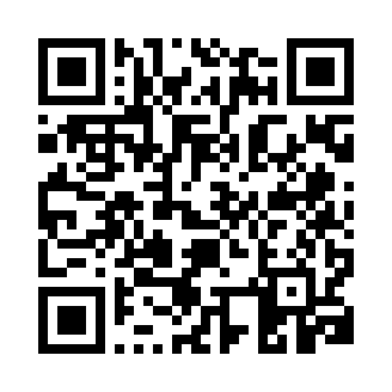

CNC AR - CA_0017_X_A_DT
Test markerového ukotvenia 3D CAD modelu. Tlač v mierke 100 % / Actual size.
AR MARKER - 100 mm

Marker musí byť vytlačený presne na šírku 100 mm. Polož ho naplocho na stôl.
OTVORIŤ AR

Naskenuj QR kamerou mobilu, povoľ kameru na stránke a potom namier mobil na HIRO marker.
Postup testu:
1. Vytlač túto stránku na A4 bez prispôsobenia veľkosti.
2. Polož papier na stôl na dobre osvetlenom mieste.
3. Naskenuj QR kód a otvor AR stránku.
4. Povoľ prístup ku kamere.
5. Namier kameru na celý HIRO marker. Nad markerom sa má objaviť sivý CAD model s modrými plochami Ø6,03 a tmavými hranami.
6. Pohybuj mobilom okolo markeru. Model má zostať pri markeri.
1. Vytlač túto stránku na A4 bez prispôsobenia veľkosti.
2. Polož papier na stôl na dobre osvetlenom mieste.
3. Naskenuj QR kód a otvor AR stránku.
4. Povoľ prístup ku kamere.
5. Namier kameru na celý HIRO marker. Nad markerom sa má objaviť sivý CAD model s modrými plochami Ø6,03 a tmavými hranami.
6. Pohybuj mobilom okolo markeru. Model má zostať pri markeri.
Poznámka: Toto je prvý markerový test, nie metrologické meranie. Ak bude tracking stabilný, ďalší krok je kalibrácia offsetu Marker -> Fixture -> Workpiece CS na CNC stroji.